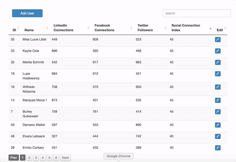
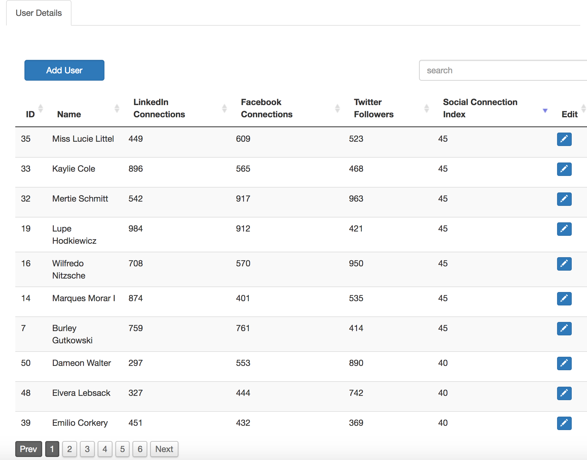
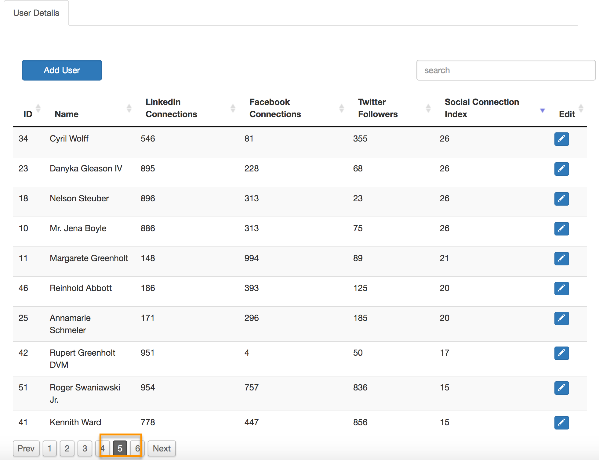
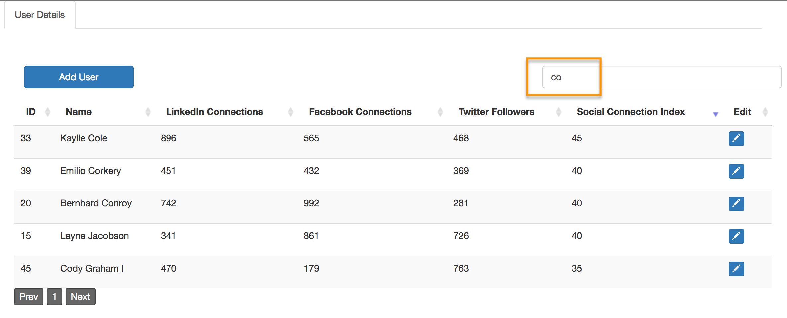
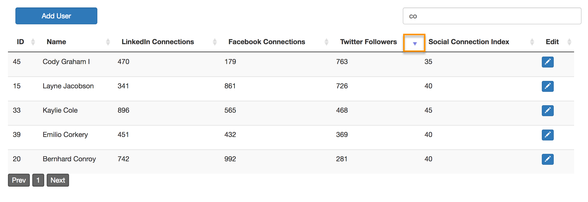
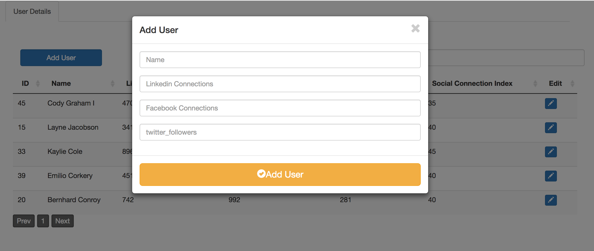
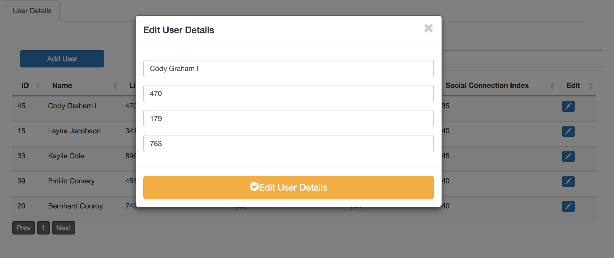

README
A social connections single page app with rails APIs
Pre-requisites
-
Ensure postgres sql is installed locally
-
Ensure ruby is installed
Installation
gem install bundle
bundle install
export RAILS_ENV=developoment
rails db:create
rails db:migrate
rails db:seed
rails s
Once installation is done, visit localhost:3000/
Testing
export RAILS_ENV=test
rails db:create
rails db:migrate
rails db:seed
rails test
Key files
javascript Controller Helper Test Layouts
Key Features Implemented
-
Shows list of all users in the database with social connection scores
-
Ability to sort results based on the the following criteria
-
Linked in connections
-
facebook connections
-
twitter followers
-
social connection index score
-
name of the user
-
id of the user
-
-
Ability to search by name (and preserve sorting and filtering).
-
Addition of a new user.
-
Data validation both in backend and frontend.
The following are the screenshots of the application
Workflow

Lists all users

Paginate

Search

Sort

Add

Edit
